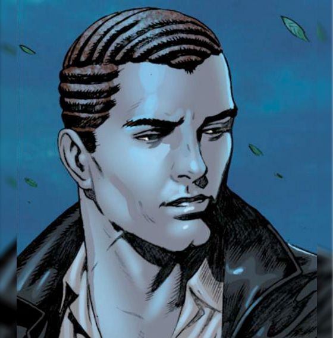

Harry Osborn was the son of wealthy industrialist Norman Osborn. When he was still a child, Harry had his soul bargained by his father with the demon Mephisto in exchange for making his financial life more success ful. With the deal closed as a result of this bargain, Harry was dest ined to suffer numerous personal tragedies when he reached adulthood, and when he died, he would have his soul sent to Hell. Harry grew up friends with Gwen Stacy at Standard High before going off to college. The two of them quickly befriended Flash Thompson when they arrived at Empire State University, but also adopted Flash's disda in for the reclusively scholarship student, Peter Parker, initially takin g Peter's distant behavior as snobbery. However, he soon realized Peter was merely shy and distracted by his aunt May Parker's health problem s